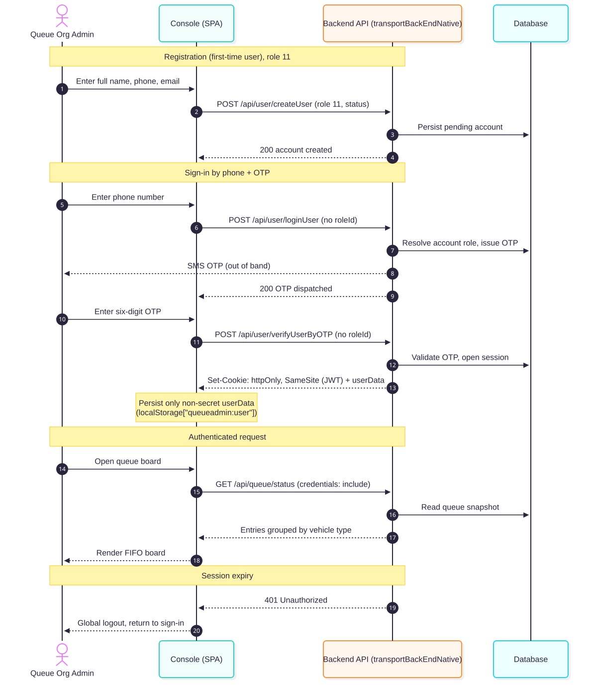
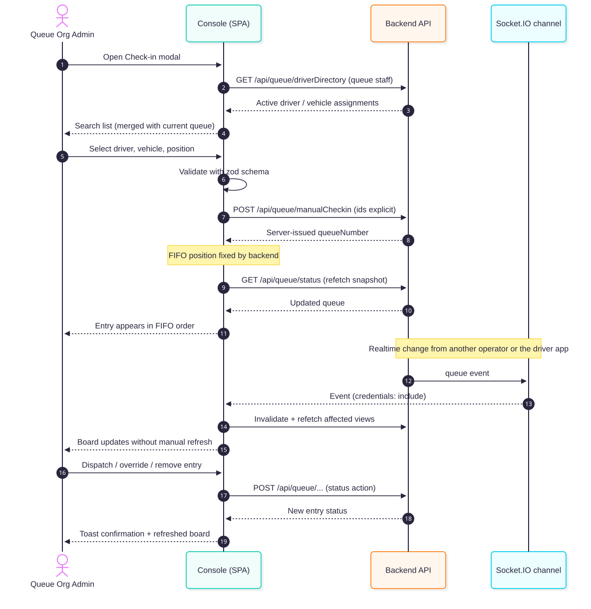

| Document | SRS-1.0.0, the Software Requirements Specification |
| Application | Dynamics Queue Admin, the dispatch-queue (loading-place) management console of the Dynamics freight marketplace. Web application, product version 1.0.0. |
| Asset type | Web Application |
| Asset code | ASSET-DYN-QA-001 |
| Standard | INSA Secure Website Management Standard, Version 1.0, 2014 EC |
| Production host | queue.dynamicsroute.tech |
| Backend API |
https://app.dynamicsroute.tech (production) /
https://dev.dynamicsroute.tech (development), reached
at <VITE_API_BASE_URL>/api. The backend
(transportBackEndNative) is a separate system of
record.
|
| Version specified | 1.0.0 |
| Scope | This web console only. The Dynamics backend, the driver mobile application, the shipper application and the operations/administrator dashboards are separate systems; their interfaces to this console are specified in §5 and §7. |
| Related documents |
System & Architecture Design Document (SDD), Technical Design /
Low-Level Design (TDD/LLD), End User Guide, Security Documentation;
gap analysis
queue-admin-gap-analysis.md; INSA standard content
src/data/insaStandard.ts.
|
| Submitting entity | Dynamics Transport |
| Contact person | Marew Masresha, General Manager |
| Prepared by | Marew Masresha, General Manager |
| Reviewed by | Marew Masresha, General Manager |
| Approved by | Marew Masresha, General Manager |
| Date of preparation | 15 October 2026 |
| Date of submission | 15 October 2026 |
This specification describes the console as implemented in the submitted release. Every requirement listed here is present in the shipped web application; no forward-looking features are specified. Where a capability is absent, or depends on a backend service that is not yet implemented, the requirement or its note says so (§8.5). The submitting entity completes the administrative fields (submitting entity, contact person, approval and dates).
| 1 | Introduction |
| 2 | Overall description |
| 3 | Functional requirements |
| 4 | Non-functional requirements |
| 5 | External interface requirements |
| 6 | Analysis models |
| 7 | Data requirements |
| 8 | Business rules and status model |
| 9 | Requirements traceability and document control |
| A | Appendix A — Requirement identifier index |
| B | Appendix B — Revision history |
§3 contains the numbered functional requirements (prefix
FR-), grouped by application area, each with a priority and
the check we used to verify it. §4 contains the non-functional
requirements (NFR-), grouped by quality attribute. §6
presents the analysis models (the system use-case model, and the sequence
and activity diagrams). §8 defines the queue, bidding and status business
rules that most functional requirements refer to, and it states plainly
which decisions the console makes and which
transportBackEndNative (the backend, the system of record)
enforces. Requirement identifiers are stable and are referenced by the
SDD and by the test evidence, so a reviewer can trace a requirement to
its design element and on to its implementation.
Dynamics Queue Admin is a client of the Dynamics backend. Authentication state, queue ordering, geofence decisions, bidding gate state, bid ranking and offer acceptance are authoritative on the server. The console renders that state and issues requests; it holds no independent authority over marketplace business data (§7.4).
This document specifies the requirements of Dynamics Queue Admin 1.0.0, the single-page web console used to operate a loading place (a Queue Organization) on the Dynamics freight marketplace. We wrote it for our own development and test baseline and for external review. It forms part of the submission package for the Information Security Authority's website review against the INSA Secure Website Management Standard (Version 1.0, 2014 EC).
FR-<AREA>-NN and non-functional
requirements NFR-<AREA>-NN (for example
FR-QUE-04, NFR-SEC-02). Identifiers are
stable and are not reused when a requirement is withdrawn.
transportBackEndNative, the system
of record; "the console" means this application.
docs/insa/assets/ and numbered
Figure 6.x; each model is traceable to the requirement
families it elaborates.
Monospace marks
identifiers, paths and values. Amber
highlighted text marks an honest limitation
or a server/hosting-owned control rather than a defect.
The readers we had in mind are the stakeholders of the INSA website review of Dynamics Queue Admin 1.0.0 and the parties who maintain the console. The table below suggests a reading order by audience.
| Reader | Interest | Suggested reading |
|---|---|---|
| INSA / security reviewer | Assess the console against the Secure Website Management Standard. | §1, §2, §4 (NFR-SEC), §7, §9 |
| Business owner / management | Confirm scope, obligations and approval. | §1, §2, §9.3 |
| Developer / maintainer | Understand required behaviour and how it is realized. | §3, §6, §7, §8 |
| Tester / QA | Derive verification from unambiguous requirements. | §3, §4, §9.2 |
| Operator (Queue Org Admin / Dispatcher) | Confirm the console matches daily operations. | §2, §3, §8 |
Dynamics Queue Admin does three jobs. First, loading-place management: creating and administering a Queue Organization profile, its coordinates and optional check-in radius, its approval status, and its members (roles 11 and 12). Second, the FIFO driver queue: proving driver presence by GPS check-in and placing arrivals into a first-in-first-out line per vehicle type, then dispatching, overriding, removing and auditing entries. Third, bidding on the shipper's behalf: approving or closing bidding per order and accepting a driver's bid on the shipper's behalf using explicit identifiers. It also covers a dashboard over all organizations, derived reporting, real-time synchronization, a security-compliance dashboard, localization (English and Amharic) and dark mode.
Out of scope: the Dynamics backend
(transportBackEndNative), which is the system of record;
the driver mobile application; the shipper application; and the
operations and administrator dashboards. These are separate systems with
separate requirements documents. All business logic of record (queue
ordering, the check-in geofence, the bidding gate, journey status and
offer acceptance) lives in and is enforced by the backend. This console
is a client of that record and holds no authority over it (§7.4).
| Term | Meaning |
|---|---|
| Queue Organization | A "loading place" tenant of the console (customs, factory, cement, depot, mine, farm, port, other) with coordinates, an optional check-in radius, an approval status and a queue-enabled flag. |
| Queue Org Admin |
Backend roleId: 11. Administers the loading place:
profile, membership and approval of bidding per order.
|
| Queue Dispatcher |
Backend roleId: 12. Runs the FIFO queue: manual
check-in, dispatch, override, remove and entry history.
|
| Admin / Super Admin |
Backend roleId: 3 / roleId: 6. Approve
loading places and oversee all organizations. Short session (24
hours).
|
| FIFO queue |
First-in-first-out driver waiting line per vehicle type, keyed by
the server-issued
queueNumber.
|
| Check-in | Proving driver presence at the loading place. The authoritative geofence decision for a GPS check-in is made by the backend; the console computes a Haversine distance for on-screen proximity cues. |
| targetedShipperUserUUID | An optional field on a queue entry that reserves a queued driver for one shipper; carried through dispatch as the shipper target. |
| Bidding | Drivers offer a price on an order; the console lists the authoritative bids cheapest-first and the operator accepts one on the shipper's behalf. |
| Bid |
A driver's offer on an order (driverBidUniqueId,
bidAmount, bidStatus), ranked by the
backend.
|
| Journey status | A backend status id (0-20) describing an order's lifecycle; only journey-status-1 orders are eligible for dispatch / bidding. |
| OTP | One-time password delivered by SMS; the sole authentication factor. |
| JWT | JSON Web Token issued after OTP verification and held in an httpOnly, SameSite cookie set server-side; never exposed to JavaScript. |
| Socket.IO | The real-time channel carrying the console's live queue and organization events. |
| RTK Query |
Server-state data-fetching and caching layer; a single base
api extended by feature endpoint modules.
|
| Membership | A user's active registration under a Queue Organization with role 11 or 12; membership is the permission. |
| FR / NFR | Functional requirement / non-functional requirement identifier used in §3 and §4. |
src/utils/constant.ts, the single source of truth for
REST endpoint paths.
src/lib/redux/api/*.ts, the endpoint modules and the RTK
Query contract.
src/lib/redux/api/base.ts, the base query, credentials
handling and 401-to-logout behaviour.
src/lib/socket.ts, the Socket.IO client, its
subscriptions and the debounced invalidation.
src/routes/AppRoutes.tsx, the route table and lazy
loading.
src/components/auth/ProtectedRoute.tsx,
src/components/auth/RoleGuard.tsx, the guard stack.
src/types/queue.ts,
src/lib/redux/api/types.ts, the domain types.
src/data/insaStandard.ts, the INSA standard content shown
in the compliance dashboard.
package.json, vite.config.ts,
.env.example, the build and environment model.
docs/queue-admin-gap-analysis.md, the known gaps we cite
in §7.5.
§2 covers the product perspective, user classes, operating environment, constraints and dependencies. The functional requirements live in §3, in eleven families (FR-AUTH, FR-REG, FR-ORG, FR-MEM, FR-QUE, FR-BID, FR-ORD, FR-RPT, FR-NOTIF, FR-SET, FR-SECP), and the non-functional requirements in §4, in seven families (NFR-SEC, NFR-PERF, NFR-USA, NFR-COMP, NFR-REL, NFR-MNT, NFR-PRIV). §5 specifies the external interfaces (user, software, hardware, communications). §6 presents the analysis models (system use case, sequence and activity). Data requirements are in §7, and §8 states the business rules, the queue and journey status models, the client/backend authority boundary and the declared limitations. §9 gives requirements traceability and document control, followed by Appendix A (requirement identifier index) and Appendix B (revision history).
Dynamics Queue Admin is one console in the Dynamics freight marketplace,
which is a multi-application product. The marketplace backend
(transportBackEndNative) is the system of record and
exposes REST (/api) and Socket.IO interfaces. Drivers use a
mobile application to check in, bid and update journey status; shippers
use a separate application to create freight requests. This console is
the dispatch side: it operates the physical loading place that drivers
queue at and that shippers' requests are matched to. It is a single-page
React application served as a static site at
queue.dynamicsroute.tech.
The console's major feature groups are listed below. Each is elaborated as numbered requirements in §3 and modelled in §6; the letters in brackets are the requirement prefixes.
| # | Feature group | Summary |
|---|---|---|
| F1 | Authentication and session (FR-AUTH) |
Registration with backend role 11, phone-number sign-in with OTP for roles 11 and 12, httpOnly-cookie session, global 401 logout, resend-with-countdown. |
| F2 | Registration and onboarding (FR-REG) |
Account creation, organization setup and first-run onboarding. |
| F3 | Loading-place management (FR-ORG) |
Create and edit the Queue Organization profile (coordinates, optional check-in radius, type), approval status and dashboard. |
| F4 | Membership management (FR-MEM) |
Invite, list, change role and remove members (roles 11 and 12). |
| F5 | FIFO driver queue (FR-QUE) |
Manual/GPS check-in, server-issued queue number, dispatch, override or remove with an optional reason, entry history, per-vehicle-type ordering. |
| F6 | Bidding on the shipper's behalf (FR-BID) |
Approve/close bidding per order, review ranked driver bids, accept on the shipper's behalf using explicit identifiers. |
| F7 | Orders and shipper requests (FR-ORD) |
Create, view and manage shipper requests and their journey status. |
| F8 | Reporting (FR-RPT) |
Operational KPIs, queue analytics and organization reports. |
| F9 | Real-time and notifications (FR-NOTIF) |
Socket.IO queue and organization events, in-app notifications and cache invalidation. |
| F10 | Settings, profile and appearance (FR-SET) |
Organization settings, profile, theme (dark mode), localization (English/Amharic). |
| F11 | Security compliance dashboard (FR-SECP) |
In-console view of the INSA standard content and the security checklist. |
| User class | Role id | Characteristics and primary tasks |
|---|---|---|
| Queue Org Admin | 11 |
Primary administrator of a loading place. Creates and edits the organization profile (coordinates, radius, type), manages members, and approves or closes bidding per order. Long-lived session (365 days). |
| Queue Dispatcher | 12 |
Runs the daily queue. Manually checks drivers in, dispatches queued entries to requests, overrides position or removes entries and records a reason when one is given, and reviews entry history. Long-lived session (365 days). |
| Admin | 3 |
Platform administrator. Approves, rejects or suspends loading places and oversees all organizations. Short session (24 hours). |
| Super Admin | 6 |
Platform super-administrator. Same oversight and approval powers as Admin across all organizations. Short session (24 hours). |
All four classes sign in with a phone number plus OTP and pass through
the same guard stack (ProtectedRoute then
RoleGuard, which admits roles {11, 12, 3, 6}).
Client-side role checks are a usability boundary only; the backend
re-checks role and membership on every request.
queue.dynamicsroute.tech; REST and Socket.IO to the
backend host. Session cookie is httpOnly/SameSite and requires
credentials: "include".
localStorage for non-sensitive
preferences only (queueadmin:user profile,
app_dark_mode, app_language, persisted
selectedOrgId); no token is ever stored.
VITE_PHOTON_URL), with a built-in
Ethiopian-cities fallback.
getToken() returns
null by design.
roleId so that the backend
resolves the account's own role and a role-12 dispatcher can sign in.
src/utils/constant.ts; feature modules must not
hard-code paths.
src/index.css with a
src/dark.css dark theme.
The following user-facing documentation ships with, or is generated from, the console:
docs/insa/UserGuide.html, delivered as
UserGuide.pdf) covering sign-in, loading-place setup,
membership, the FIFO queue, bidding, orders, reporting, settings and
the security dashboard.
zod schemas) and
empty-state guidance within the console itself.
src/data/insaStandard.ts) so operators can read the
obligations they are expected to meet.
Delivered formats are HTML (for review) and PDF (for submission). There is no printed manual; the guide lives in the repository alongside this specification.
queueOrgAdmin identity for queue staff and
admin for platform admins.
checkinRadiusKm.
| Actor / system | Interest |
|---|---|
| Queue Org Admin (11) | Operate the loading place; control bidding; manage members. |
| Queue Dispatcher (12) | Keep the physical queue accurate and fair (FIFO). |
| Admin (3) / Super Admin (6) | Approve and oversee loading places across the marketplace. |
| Driver / vehicle owner | Fair queue position; visible bid outcomes via the driver application. |
| Shipper | Receive a dispatched driver or an accepted bid for their request. |
| Backend REST API | System of record; authoritative business rules and identifiers. |
| Backend Socket.IO | Real-time queue and organization event fan-out. |
| Photon geocoder (optional) | External place search for order origin/destination. |
| INSA reviewer | Assess the console against the Secure Website Management Standard. |
This section sets out what the console must do for the staff who run a loading place. Each requirement is a single testable statement about the software's behaviour. Several of them name the Dynamics backend, because it owns the rule behind the requirement and the console has to follow it rather than contradict it.
Every requirement has a stable identifier, one testable statement, a priority and the method used to check it. M marks a must-have for release 1.0.0 and S a should-have. Three verification methods are used: D is a demonstration in the running release, T is a test case run automatically or against the API, and I is an inspection of configuration or build output. The module that implements each family is recorded once in the traceability table in §9.1 rather than repeated in every row.
Staff reach the console by phone number. A new user registers with a name and a phone number; a returning user signs in with the same number and a one-time code delivered by SMS. No password is stored or reset. Once the code is accepted the backend sets the session as an httpOnly cookie, which the browser then sends with each request. The token is never exposed to JavaScript.
Two consequences follow. The session is held by the backend, so a
401 ends it everywhere at once and no screen is left
half-signed-in. Only four roles have business in the console: Queue Org
Admin (11), Queue Dispatcher (12), Admin (3) and Super Admin (6). A user
who has not yet created a loading place is sent to the setup screen
before any operational page.
| ID | Requirement | Pri | Verified by |
|---|---|---|---|
| FR-AUTH-01 | The console shall provide a registration form that asks for full name, phone number and an optional email address, and shall refuse to submit while the name or phone number is missing. | M | D — blank-field and valid submissions |
| FR-AUTH-02 |
The console shall normalise an Ethiopian mobile number to
+251 followed by nine digits, accepting a leading
0 or 251 from the user, and shall reject
a number that cannot be normalised.
|
M | T — phone formatting suite |
| FR-AUTH-03 | The console shall sign a returning user in with a phone number and a six-digit one-time code sent by SMS; no password field shall be presented. | M | D — sign-in walkthrough |
| FR-AUTH-04 | The one-time-code screen shall show six single-digit boxes that advance as digits are typed and step back when one is deleted, and shall keep the verify action disabled until all six digits are present. | M | D — keyboard entry and paste |
| FR-AUTH-05 | The code screen shall offer a resend action only after a sixty-second countdown, showing the seconds remaining, and shall issue a fresh code when it is used. | S | D — wait out the countdown |
| FR-AUTH-06 | The authenticated session shall be carried in an httpOnly, SameSite cookie set by the backend; the console shall not read, write or persist the session token anywhere in the browser. | M | I — cookie flags and storage review |
| FR-AUTH-07 |
The console shall send the session cookie with every API request
and shall treat any 401 response as the end of the
session, clearing local authentication and returning the user to
the sign-in screen.
|
M | T — expired-session request |
| FR-AUTH-08 | When the user signs out, the console shall ask the backend to clear the session cookie and shall always clear the local profile, even if that request fails or times out. | M | D — sign out with the network offline |
| FR-AUTH-09 | The console shall admit only authenticated users whose role is 11, 12, 3 or 6, sending everyone else to the sign-in screen, and shall route an authenticated user with no loading place to the setup screen before any operational page. | M | D — one account per role |
Registration creates the first Queue Org Admin account for a loading place. The form asks for a name and a phone number, plus an email address if the user wants one recorded. Self-registration always yields role 11, since a person registering without an organisation is setting one up rather than joining one. Dispatcher accounts are created later by a Queue Org Admin through the members screen.
After verification the user has an account but belongs to no loading place. Rather than an empty dashboard, the console explains the next step and opens the setup form. A loading place created this way starts as pending, and its queue stays closed until a platform administrator approves it.
| ID | Requirement | Pri | Verified by |
|---|---|---|---|
| FR-REG-01 | A self-registered account shall be created with role 11 (Queue Org Admin) and shall not become usable until the phone number has been verified by one-time code. | M | D — register, then inspect the account |
| FR-REG-02 | A successful registration shall move the user straight to the one-time-code screen with the phone number already carried over, so the details are not entered twice. | M | D — registration walkthrough |
| FR-REG-03 | After first verification, a user who belongs to no loading place shall see a short explanation of why setup is required and the organisation form, rather than an empty dashboard. | M | D — new account, first sign-in |
| FR-REG-04 | The setup form shall capture the loading-place name, its type, a searchable address, latitude and longitude, and an optional contact phone number. | M | D — create a loading place |
| FR-REG-05 | A loading place created during onboarding shall start with approval status pending and its queue disabled until a platform administrator approves it. | M | D — check status after creation |
| FR-REG-06 | After a successful setup the console shall open the dashboard with the new loading place selected and show the pending-approval notice, so the user knows what happens next. | M | D — post-setup landing page |
The dashboard lists the loading places the signed-in user is entitled to see, with the name, type, address, approval state and queue state needed to choose one. The list can be searched and sorted, and it shows eight rows per page.
A Queue Org Admin can edit the profile at any time. Approval is a platform decision: approving a place opens its queue, while suspending or rejecting it closes the queue without deleting the record, so the history and the assigned staff are kept. The check-in radius is the distance from the gate within which a driver's GPS check-in is accepted; it defaults to fifteen kilometres when nobody sets it.
| ID | Requirement | Pri | Verified by |
|---|---|---|---|
| FR-ORG-01 | The dashboard shall list the loading places available to the user with name, type, location, approval status and queue state, and shall let the user search the list and change its sort order. | M | D — list, search and sort |
| FR-ORG-02 | The list shall show eight loading places per page and shall keep the paging controls visible when more than one page exists. | S | D — organisation with more than eight records |
| FR-ORG-03 | The console shall allow a user to create a loading place with a name, one of the eight supported types, an address, coordinates and an optional phone number, and shall reject a duplicate name with a message that names the conflict. | M | D — create, then repeat the same name |
| FR-ORG-04 | The console shall default the check-in radius to fifteen kilometres when the field is left empty and shall accept a different radius when one is supplied. | M | T — create with and without a radius |
| FR-ORG-05 | The console shall display the approval state of a loading place wherever the place is shown, and shall state why the queue is closed when the place is pending, rejected or suspended. | M | D — one record in each state |
| FR-ORG-06 | A Queue Org Admin shall be able to edit the name, type, phone number, address, latitude and longitude of the loading place, with the save action unavailable until something has actually changed. | M | D — edit and save the profile |
| FR-ORG-07 | Latitude shall be validated between −90 and 90 and longitude between −180 and 180 before a profile or a new place is saved. | M | T — invalid coordinate submission |
| FR-ORG-08 | An Admin or Super Admin shall be able to approve, suspend or reject a loading place; approval shall enable its queue, while suspension or rejection shall disable the queue without deleting the record. | M | D — change status as an administrator |
| FR-ORG-09 | Choosing a loading place shall scope the queue board, the orders area and the reports to that place, and the organisation detail page shall bring its profile, members and live board together in one view. | M | D — open an organisation and move between tabs |
| FR-ORG-10 |
The legacy /organizations address and any unknown
in-app path shall resolve to the dashboard instead of a dead page.
|
S | D — open both addresses directly |
Membership is what grants access. Holding a queue role is not enough on its own; a user sees a loading place only while an active membership row ties them to it. The effect is immediate, so deactivating a member withdraws access on their next request and no password reset is involved.
Only a Queue Org Admin manages members. A dispatcher sees the member list but has no add, deactivate or remove controls. Deactivation can be reversed; removal is confirmed first and ends the membership.
| ID | Requirement | Pri | Verified by |
|---|---|---|---|
| FR-MEM-01 | The members view shall list each member's name, phone number, role and active or inactive state for the selected loading place. | M | D — open the members table |
| FR-MEM-02 | A Queue Org Admin shall be able to add a person to the loading place by their user identifier and assign either Queue Org Admin (11) or Queue Dispatcher (12). | M | D — add one member of each role |
| FR-MEM-03 | The console shall ask for confirmation before deactivating a member, and an inactive member shall be unable to act on the loading place until reactivated. | M | D — deactivate, then use the account |
| FR-MEM-04 | A Queue Org Admin shall be able to reactivate a previously deactivated member without recreating the membership. | S | D — reactivate the same account |
| FR-MEM-05 | The console shall ask for confirmation before removing a membership, and removal shall be distinct from deactivation in the interface so the two are not confused. | M | D — remove a membership |
| FR-MEM-06 | Membership changes shall take effect on the member's next request, and a Queue Dispatcher shall see the member list read-only with no add, deactivate, reactivate or remove controls. | M | D — sign in as both roles |
The queue board shows the loading place as it currently stands, grouped by vehicle type: drivers waiting, drivers offered a job, and drivers loading or finished. A second view lists every driver in one table. A badge reports whether the socket is connected; while it reads “Connecting”, the screen keeps showing the last confirmed snapshot.
Drivers normally check in from the mobile application. The console keeps a manual path for the gate: a dispatcher can search the driver directory by name, phone number or vehicle-driver identifier, or paste a complete identifier from a ticket. The modal flags a driver who is already waiting. Queue numbers come from the server, and the console never renumbers or reorders the line on its own.
Dispatch, override and cancellation are separate actions, each with its own confirmation. Dispatch attaches the driver at the front of the chosen vehicle queue to one eligible order selected by the operator. Override moves an entry to a new position and takes an optional reason. Cancellation removes a driver from the line, also with an optional reason. All three are recorded in the entry history.
| ID | Requirement | Pri | Verified by |
|---|---|---|---|
| FR-QUE-01 | The queue board shall display the current queue for the selected loading place, in the order returned by the server, with the waiting, offered, loading and loaded counts for each vehicle type. | M | D — compare board with queue snapshot |
| FR-QUE-02 | The board shall offer two views, “By Vehicle Type” and “All Drivers”, and shall open in the vehicle-type view. | S | D — switch between the two views |
| FR-QUE-03 | The board shall show a live indicator when the real-time connection is open and a connecting indicator when it is not, so the operator can tell fresh data from a stale snapshot. | M | D — stop and restore the socket |
| FR-QUE-04 | Manual check-in shall let a dispatcher search for a registered driver by name, phone number or vehicle-driver identifier once at least two characters have been typed, or paste a complete vehicle-driver identifier directly. | M | D — search by each field and paste an ID |
| FR-QUE-05 | The check-in form shall mark a driver who is already waiting and shall prevent a second active entry for the same driver at the same loading place. | M | D — check the same driver in twice |
| FR-QUE-06 | A manual check-in shall record the vehicle type and an optional ticket number; when the ticket is left blank the driver shall be placed at the end of the line with the next server-assigned number. | M | D — check in with and without a ticket |
| FR-QUE-07 | Before a check-in is submitted the console shall show the distance from the loading place against its configured radius as a proximity cue; the authoritative geofence decision shall remain with the backend. | M | D — check in inside and outside the radius |
| FR-QUE-08 | The queue number shall be issued by the server; the console shall display that number and shall not calculate, renumber or reorder queue positions on its own. | M | I — compare two clients on the same queue |
| FR-QUE-09 | Dispatch shall attach the driver at the front of the chosen vehicle queue to one eligible order selected by the operator, and shall show the selected order and driver for confirmation before sending the request. | M | D — dispatch a waiting driver |
| FR-QUE-10 | A dispatcher shall be able to move a queue entry to a new position of one or higher, with an optional reason of up to 500 characters, and the change shall be recorded in the entry history. | M | D — override a position, then read history |
| FR-QUE-11 | A dispatcher shall be able to cancel a driver from the queue after confirming the action, with an optional reason, and the driver shall disappear from the waiting line without deleting the historical record. | M | D — cancel an entry, then reopen history |
| FR-QUE-12 | The entry history shall show every recorded change to a queue entry, including the previous value, the new value, the person who made the change and the time it happened. | M | D — inspect an entry with several changes |
Bidding is switched on per order. A shipper may want one load auctioned and the next handled first come, first served, so the control sits on each order and affects that order only. Opening or closing it requires role 11, and the backend enforces that, which is why the other roles see the control disabled instead of an action that would be refused.
The console does not rank or award bids. It requests the bids for an order, lists them cheapest first with amount, note, status and time, and submits the identifier of the bid the operator selects. The backend records the outcome and the console refetches the order to show it.
| ID | Requirement | Pri | Verified by |
|---|---|---|---|
| FR-BID-01 | The console shall show an open-or-close bidding control on an individual order, enabled for a Queue Org Admin (role 11) and disabled for every other role. | M | D — one account per role |
| FR-BID-02 | Opening bidding shall make that order available to carriers; closing it shall return the order to the ordinary queue, and the two orders in one batch shall be able to hold different states at the same time. | M | D — open one order and leave its neighbour closed |
| FR-BID-03 | The bids view shall list each bid's amount, note, status and submission time, ordered cheapest first as returned by the backend. | M | D — open an order with several bids |
| FR-BID-04 | A Queue Org Admin shall be able to accept one bid on the shipper's behalf by selecting it explicitly and confirming, and the console shall send the bid identifier rather than a position in the list. | M | D — accept a bid and inspect the request |
| FR-BID-05 | After acceptance the console shall show the backend's outcome, including the selected bid and the bids that were not selected, without deciding the result itself. | M | D — compare response with the bids list |
| FR-BID-06 | A company-target batch shall show its aggregated bids, and creating an order for more than nine vehicles shall automatically place it in company-target mode with bidding open. | M | D — create a ten-vehicle order |
| FR-BID-07 | When the backend refuses a bidding action the console shall show the refusal as a permission error and shall not present the change as successful. | S | T — request as role 12 |
An order is a shipper request that a loading place may serve. The Orders area separates work in progress from completed work with two tabs, shows ten batches per page, and expands a batch to list the orders inside it. Creating an order is the only place where an operator acts on a shipper's behalf, so the form applies the rules the backend will apply: the shipping date cannot be in the past, the delivery date cannot precede it, and the quantity must fit the chosen vehicle type.
A request of more than nine vehicles is treated as a company-target batch with bidding open; nine or fewer stay individual. The form performs that switch as the count changes rather than letting the operator submit a request the backend would reject. From the orders table an operator can also open a driver's details, edit an order, or delete one after confirming.
| ID | Requirement | Pri | Verified by |
|---|---|---|---|
| FR-ORD-01 | The Orders area shall present ongoing and completed work in two tabs and shall show ten order batches per page with working paging controls. | M | D — switch tabs and page through the list |
| FR-ORD-02 | The console shall allow an order to be created with a shipper phone number, vehicle type, item name, quantity in quintals, shipping and delivery dates, origin, destination, shipping cost, request mode and dispatch mode. | M | D — create one order of each mode |
| FR-ORD-03 | The order form shall reject a shipping date earlier than today, a delivery date earlier than the shipping date, and a quantity above the capacity of the selected vehicle type, with a message that says which limit was crossed. | M | T — boundary dates and quantities |
| FR-ORD-04 | Raising the vehicle count above nine in individual mode shall switch the request to company-target mode with bidding open, and switching back to individual mode shall restore a single vehicle and close bidding. | M | D — move the count across the boundary |
| FR-ORD-05 | The console shall let an operator edit an existing order and save the changes after the same validation applied at creation. | M | D — edit and save an order |
| FR-ORD-06 | The console shall ask for confirmation before deleting an order and shall remove it from the list only after the backend confirms the deletion. | M | D — delete an order |
| FR-ORD-07 | The driver details page shall bring together the driver's current order, location map, recent activity, cost information, vehicle and licence details, and an edit action for the driver record. | S | D — open a driver from an order |
| FR-ORD-08 | The Orders area shall let the operator search and filter the list and expand a batch to see the orders it contains. | M | D — search, filter and expand a batch |
| FR-ORD-09 | Order and queue rows shall show the journey status supplied by the backend, using the status names staff already know, rather than a separate set of queue-only labels. | M | D — compare labels with the status list |
| FR-ORD-10 | A “New Order” action shall be available from both the Orders area and the live queue board, and shall open the same order form. | S | D — open it from both places |
Reports cover the questions a manager asks after a shift: how many drivers are in each state, how request volume has moved over the year, and how each loading place is doing. Summary cards carry the headline numbers, a donut shows driver status and a bar chart shows twelve months of requests. All of it is derived from the same organisation, queue and request data used elsewhere in the console.
The organisation report table below the charts shows five places per page and opens a read-only queue summary without leaving the page. From that summary, “Manage Full Queue” opens the live board for the same place.
| ID | Requirement | Pri | Verified by |
|---|---|---|---|
| FR-RPT-01 | The reports page shall show summary cards for total drivers, waiting drivers, active orders and completed work for the selected scope. | M | D — compare cards with the underlying lists |
| FR-RPT-02 | The reports page shall show a driver-status breakdown as a donut chart and request volume for the last twelve months as a bar chart. | S | D — visual check against a known month |
| FR-RPT-03 | The organisation report table shall list five loading places per page, with search and sort, and shall show each place's approval state and queue activity. | M | D — page through more than five places |
| FR-RPT-04 | Opening a queue summary from the report shall show the waiting, offered, loading and total driver counts for that place together with its current entries, without navigating away from the report. | S | D — open and close the summary |
| FR-RPT-05 | The queue summary shall offer a “Manage Full Queue” action that opens the live board for the same loading place. | S | D — follow the action |
| FR-RPT-06 | Reports shall include only the loading places the signed-in user is entitled to see, using the same access rule as the dashboard. | M | D — compare two accounts with different access |
Queue and organisation changes are pushed from the backend over Socket.IO rather than polled. When an event arrives the affected queries are invalidated and refetched, and a short delay lets a burst settle so ten simultaneous check-ins cause one redraw instead of ten.
A dropped connection is not an error state. The last snapshot stays on screen, the badge reads “Connecting”, and the client retries five times with a growing delay. If the handshake is rejected because the session is no longer valid, retrying would achieve nothing, so the console stops and ends the session.
| ID | Requirement | Pri | Verified by |
|---|---|---|---|
| FR-NOTIF-01 | The console shall open the real-time connection when a user is authenticated and shall close it when the user signs out or the session ends. | M | D — sign in and out, observe the socket |
| FR-NOTIF-02 | The console shall subscribe to the selected loading place's queue room, unsubscribe when the selection changes, and restore the subscription automatically after a reconnect. | M | D — switch organisations while connected |
| FR-NOTIF-03 | A lost connection shall be retried up to five times with a delay starting at two seconds and capped at ten seconds, while the screen continues to show the last confirmed data. | M | D — stop the backend and watch the retries |
| FR-NOTIF-04 | A handshake rejected as unauthorised shall end the session and stop further reconnection attempts instead of retrying indefinitely. | M | T — connect with an expired session |
| FR-NOTIF-05 | Queue events shall be coalesced before refetching: organisation changes after 100 milliseconds and queue or order changes after 250 milliseconds, so a burst produces one refresh rather than one per event. | S | I — event handler review and burst check |
Settings shows the profile returned by the backend and provides the appearance and language choices, which are stored on the device and survive a reload. It also carries the two account actions that belong at the end of a session: sign out and delete account.
Push notifications, email notifications and two-factor authentication appear on the page but have no backend endpoint in this release, so they are shown as unavailable. They are listed here so that the specification and the screen agree on what release 1.0.0 does not include.
| ID | Requirement | Pri | Verified by |
|---|---|---|---|
| FR-SET-01 | The settings page shall show the signed-in user's name, phone number, email address and role as returned by the backend. | M | D — open settings for two roles |
| FR-SET-02 | The user shall be able to switch between light and dark appearance, and the choice shall persist across reloads and sessions on that device. | S | D — switch, reload and return |
| FR-SET-03 | The user shall be able to choose English or Amharic, and the change shall take effect immediately and persist on that device. | S | D — change language and reload |
| FR-SET-04 | The settings page shall provide a sign-out action with the same behaviour as signing out from the navigation. | M | D — sign out from settings |
| FR-SET-05 | The settings page shall provide an account-deletion action behind a confirmation dialog, and a successful deletion shall end the session and return the user to sign-in. | M | D — delete a test account |
| FR-SET-06 | Push notifications, email notifications and two-factor authentication shall be shown as unavailable and shall not be presented as working controls. | S | I — settings page review |
The last feature area reproduces the INSA Secure Website Management Standard inside the console so the team can work through the same document the auditor uses. It is a reference and a self-assessment aid, not a certificate of compliance. Checklist marks stay in the browser on the machine where they were entered, and the page states that nothing is sent to the backend.
The workspace has four tabs: an overview of the standard, the five focus areas with their requirements, the Annex A vulnerabilities and the Annex B test checklist. The compliance score is the share of checklist items marked pass, so an untouched checklist reads zero.
| ID | Requirement | Pri | Verified by |
|---|---|---|---|
| FR-SECP-01 | The security workspace shall present the purpose, scope and guiding principles of the INSA Secure Website Management Standard and shall name the version it is based on. | S | D — open the overview tab |
| FR-SECP-02 | The workspace shall list the five focus areas with their requirements, marking each requirement as mandatory or recommended and allowing the areas to be expanded and collapsed. | S | D — open each focus area |
| FR-SECP-03 | The workspace shall list the Annex A vulnerabilities with their possible threats. | S | D — open the vulnerabilities tab |
| FR-SECP-04 | The workspace shall present the Annex B test checklist, allow each test to be marked pass or fail, filter by status or search text, and show progress for each group. | S | D — mark, filter and search tests |
| FR-SECP-05 | The workspace shall compute and display a compliance score from the marked tests, keep the marks in local browser storage, and provide a reset action that clears them all after confirmation. | S | D — score, reload and reset |
The requirements in this section describe how well the console must behave. They are grouped by quality attribute, and each one is stated so that it can be checked: a limit, a measurable target, or a clear statement of which component carries the responsibility. Some of them record a boundary — HTTP security headers, for example, are set by the hosting layer rather than by this application — because a specification that claimed otherwise would be wrong.
Figures taken from the implementation are the figures release 1.0.0 uses. Where a figure is a target rather than a measurement, the verification column names the measurement.
The security posture rests on one decision: the browser is not trusted with the session. The token stays in an httpOnly cookie, the server re-checks every request, and the route guards exist to keep the interface consistent rather than to enforce access. Bypassing a guard therefore yields a screen, not a permission.
| ID | Requirement | Pri | Verified by |
|---|---|---|---|
| NFR-SEC-01 | The session token shall live only in an httpOnly, SameSite cookie and shall never be readable from JavaScript or written to local or session storage. | M | I — cookie flags and storage inspection |
| NFR-SEC-02 | All application traffic shall use HTTPS, and the production host shall set transport-security and content-security headers; those headers are a hosting responsibility and are not configured by this code asset. | M | I — response headers from production |
| NFR-SEC-03 | Every backend request shall be authorised on the server against the user's role and active membership; client route guards shall not be treated as an access control. | M | T — direct API call with a lower-privilege session |
| NFR-SEC-04 | An expired or rejected session shall produce a single, global sign- out rather than a partly authenticated screen, and an unauthorised socket handshake shall end the session and stop retries. | M | T — expire a session during use |
| NFR-SEC-05 | Every form shall validate and sanitise its input against a declared schema covering type, length, format, enumerations and numeric ranges before sending it, and rendered values shall be escaped by the framework. | M | T — invalid and injected input cases |
| NFR-SEC-06 | Browser storage shall hold only non-sensitive values: the display profile, the selected loading place, the theme and the language. A legacy record that once held a token shall be removed when it is read. | M | I — storage inspection after sign-in |
| NFR-SEC-07 | A production build shall contain no source maps and no server secret, API key or private credential; configuration exposed to the browser shall contain public values only. | M | I — inspect the build output |
| NFR-SEC-08 | User-facing errors shall be phrased in plain language and shall not reveal stack traces, SQL, file paths or internal service names. | M | D — force 400, 403, 409 and 500 responses |
The console is used at a gate, often on a laptop tethered to a phone, so the performance requirements favour restraint over raw speed. Routes load only when visited, server data is cached for five minutes, and real-time bursts are coalesced into one refresh. Every list is bounded, which keeps both the browser and the reader within limits.
| ID | Requirement | Pri | Verified by |
|---|---|---|---|
| NFR-PERF-01 | Each route shall load as its own code-split chunk behind a loading fallback, so opening the console does not download the orders, reports and settings pages before they are needed. | M | I — inspect the production chunks |
| NFR-PERF-02 | On the reference environment (a mid-range laptop on a 20 Mbps connection with a cold cache) the dashboard shall become interactive within three seconds, and the largest contentful paint shall be at or below 2.5 seconds when measured with Lighthouse. | S | M — Lighthouse on the staging build |
| NFR-PERF-03 | Queries shall retain unused server data for 300 seconds, and the console shall not refetch on window focus or on socket reconnect; freshness comes from explicit invalidation and pushed events. | M | I — cache configuration review |
| NFR-PERF-04 | Repeated real-time events shall be coalesced into one refetch per affected data set, using a 100-millisecond window for organisation events and 250 milliseconds for queue and order events. | M | T — burst of simulated events |
| NFR-PERF-05 | List sizes shall be bounded: no API list page above 100 items, eight loading places per dashboard page, five report rows per page and ten order batches per page. | M | I — paging constants and list responses |
| NFR-PERF-06 | A click that starts work shall produce visible feedback within 100 milliseconds, and a request in flight shall disable its submit control so the action cannot be sent twice. | M | D — slow-network walkthrough |
The operators work quickly, sometimes in daylight, sometimes one-handed. That calls for large touch targets, visible state and a confirmation before anything destructive. The same screens have to work on a phone, which is where many dispatchers first see them.
| ID | Requirement | Pri | Verified by |
|---|---|---|---|
| NFR-USA-01 | Every operational screen shall remain usable from 360 to 1920 pixels wide without horizontal scrolling, and touch targets shall be at least 44 by 44 pixels. | M | D — phone, tablet and desktop widths |
| NFR-USA-02 | All actions shall be reachable from the keyboard, keyboard focus shall be visible, and a modal shall keep focus inside itself and close on Escape. | M | D — keyboard-only walkthrough |
| NFR-USA-03 | Icon-only buttons, tabs, dialogs and form fields shall expose an accessible name or role, and each page shall have a sensible heading order. | M | I — accessibility inspection |
| NFR-USA-04 | All user-facing text shall be available in English and Amharic, with English as the fallback when a translation is missing, and the chosen language shall persist on the device. | S | D — switch language across the console |
| NFR-USA-05 | Every asynchronous view shall have a loading state, an empty state and a readable error state; a failed request shall not leave a blank region behind. | M | D — force loading, empty and error cases |
| NFR-USA-06 | Destructive actions shall require confirmation, and every completed or failed operation shall report its outcome in a toast that names what happened. | M | D — delete, cancel and override flows |
The console is a static single-page application, so compatibility concerns browsers and hosting. The current and previous major versions of Chrome, Edge, Firefox and Safari are supported, and nothing older. The host must serve the built files over TLS and return the application shell for unknown paths, so a direct link to an order or a driver page still loads.
| ID | Requirement | Pri | Verified by |
|---|---|---|---|
| NFR-COMP-01 | The console shall run on the current and previous major versions of Chrome, Edge, Firefox and Safari, and shall not require a plug-in or browser extension. | M | D — smoke test on each browser |
| NFR-COMP-02 | The production host shall serve the application shell for any in-app path, so a deep link to an order, driver or report opens the correct page after a full reload. | M | D — open a deep link in a new tab |
| NFR-COMP-03 | The application shall use standard browser capabilities (DOM, Fetch, WebSocket and local storage) and shall not depend on a specific operating system. | M | I — dependency and API review |
| NFR-COMP-04 | The API and socket addresses shall be supplied as build-time configuration, so pointing the same build at another environment does not require a source change. | S | I — environment file review |
The reliability requirements are about not losing the operator's place. The session survives a reload, a dropped socket costs freshness rather than the screen, and a failed action leaves the previous state intact. No availability percentage is claimed for the client; the backend and the hosting carry that, and the console is built to behave sensibly when they are unavailable.
| ID | Requirement | Pri | Verified by |
|---|---|---|---|
| NFR-REL-01 | Reloading the page or reopening the console shall keep the user signed in while the session cookie is valid, without asking for the one-time code again. | M | D — reload on each main page |
| NFR-REL-02 | If the real-time connection drops, the console shall keep the last confirmed data visible, show the connecting state, and recover automatically when the connection returns. | M | D — interrupt and restore the socket |
| NFR-REL-03 | A failed create, update or delete shall leave the interface in its previous state and shall show the reason; the console shall not display an optimistic result that the backend did not confirm. | M | T — reject a mutation at the API |
| NFR-REL-04 | The queue board shall render the server's snapshot at load and after each pushed change; it shall not hold or display a locally reordered queue. | M | I — compare two clients on one queue |
The console is maintained by a small team, so the code has to be predictable to someone who did not write it: one place for endpoint paths, one for route definitions, typed contracts, and a build that fails on a type error or a lint warning. The documents in this submission are maintained alongside the code for the same reason.
| ID | Requirement | Pri | Verified by |
|---|---|---|---|
| NFR-MNT-01 | The production build shall run the TypeScript compiler and shall fail on a type error, an unused local or an unused parameter, and the lint step shall fail on any warning. | M | I — build and lint output |
| NFR-MNT-02 | API paths, route definitions, domain types and translation keys shall each live in a single declared module, so a change is made in one place rather than searched for across components. | M | I — source structure review |
| NFR-MNT-03 | The highest-risk logic — queue mutations, order mapping, journey status, phone formatting, the INSA content and the security checklist — shall have automated tests that run with one command. | M | T — run the test suite |
| NFR-MNT-04 | Each release shall be accompanied by an SRS, a design document, a technical specification and a user guide that describe the release as built, not as planned. | S | I — document set review |
| NFR-MNT-05 | Dependency versions shall be pinned in the lockfile, and the Node and Vite versions used for a release shall be recorded so the build can be reproduced. | S | I — lockfile and build notes |
The console handles staff identity and commercial freight data. Collection is kept narrow: a name, a phone number, an optional email, a role, and the organisation, queue and order records needed to do the work. There is no analytics, advertising or tracking script and no third-party cookie. Personal data is shown only to signed-in users who already have access to the relevant loading place.
| ID | Requirement | Pri | Verified by |
|---|---|---|---|
| NFR-PRIV-01 | The console shall collect and display only the personal data needed to operate a loading place: name, phone number, optional email, role, membership and the queue or order records associated with the work. | M | I — field inventory across forms |
| NFR-PRIV-02 | The application shall not include analytics, advertising, session recording or third-party tracking cookies. | M | I — network and dependency review |
| NFR-PRIV-03 | Personal data shall be shown only to authenticated users with access to the relevant loading place, and shall not be placed in page URLs, browser history or client-side logs. | M | I — route and log inspection |
| NFR-PRIV-04 | A user shall be able to request deletion of their account from the settings page; the backend may retain queue and audit records where operational or legal obligations require it, and the interface shall not promise more than that. | S | D — delete a test account |
The console is a single-page application. Everything below is reached through the route table and lazy-loaded. Operator-facing screens are rendered in our own design system (hand-written CSS); there is no third-party UI kit.
| Screen | Route | Purpose |
|---|---|---|
| Sign in | /login |
Phone number entry; dispatch OTP. |
| OTP verification | /login (step) |
Six-digit OTP entry and resend. |
| Register | /register |
Create a Queue Org Admin account. |
| Setup organization | /setup-org |
Onboard the first loading place. |
| Dashboard | /dashboard |
Organization list, status and active-org summary. |
| Organization management | /orgs/:queueOrganizationUniqueId |
Profile, approval actions and members. |
| Orders |
/orders,
/orgs/:queueOrganizationUniqueId/orders
|
Shipper requests, batches and bids. |
| Reports | /reports |
KPIs, charts and per-org reports. |
| Security compliance | /security |
INSA self-assessment dashboard. |
| Settings | /settings |
Profile, theme, language and account. |
| Queue board | (within dashboard / org views) | FIFO queue, check-in, dispatch, override, history. |
| Fallback | /, /organizations, * |
Redirect to /dashboard. |
Endpoint paths are centralized in src/utils/constant.ts,
and the API base resolves to
<VITE_API_BASE_URL>/api. What the frontend actually
calls:
Method + path (/api prefix) |
Purpose | Module |
|---|---|---|
POST /user/loginUser |
Request login OTP for a phone number (no roleId).
|
auth |
POST /user/verifyUserByOTP |
Verify OTP; backend sets the session cookie (no
roleId).
|
auth |
POST /user/createUser |
Register a queue-org admin account (role 11). | auth |
POST /user/logout |
Clear the server session cookie. | auth |
GET /queueOrganization |
List queue organizations for the user. | queue organization |
POST /queueOrganization |
Create a loading place (approvalStatus: pending).
|
queue organization |
GET /queueOrganization/:id |
Get one organization. | queue organization |
PATCH /queueOrganization/:id |
Update the organization profile. | queue organization |
DELETE /queueOrganization/:id |
Soft-delete the organization. | queue organization |
PATCH /queueOrganization/:id/approve |
Approve / reject / suspend; toggles queueEnabled.
|
queue organization |
GET /queueOrganization/:id/members |
List members (role 11/12, active flag). | queue organization |
POST /queueOrganization/:id/members |
Add a member (userUniqueId in body). |
queue organization |
PATCH
/queueOrganization/:id/members/:membershipId/deactivate
|
Deactivate membership (revokes access immediately). | queue organization |
PATCH
/queueOrganization/:id/members/:membershipId/reactivate
|
Reactivate membership. | queue organization |
DELETE /queueOrganization/:id/members/:membershipId
|
Remove membership. | queue organization |
GET /queue/status |
Queue snapshot by vehicle type for a date. | driver queue |
POST /queue/manualCheckin |
Check a vehicle-driver in; returns queueNumber.
|
driver queue |
POST /queue/dispatch |
Dispatch a queued entry to a shipper request. | driver queue |
DELETE /queue/entry/:queueUniqueId |
Remove a queue entry (audited). | driver queue |
PATCH /queue/entry/:queueUniqueId/override |
Override position; optional reason (audited). | driver queue |
GET /queue/entry/:queueUniqueId/history |
Entry change history. | driver queue |
GET /queue/driverDirectory |
Search active driver/vehicle assignments (queue staff only). | vehicles |
POST /queue/bidding/approve |
Open/close bidding per order
(shipperRequestUniqueIds,
approved).
|
driver queue / bids |
GET /queue/bidding/order/:shipperRequestUniqueId/bids
|
Authoritative driver bids for an order (cheapest-first). | driver queue / bids |
POST /shipperRequest/createRequest |
Create a shipper request / batch order. | shipper requests |
GET /user/getShipperRequest4allOrSingleUser |
List shipper requests (all/single, org-scoped). | shipper requests |
GET /shipperRequestBatch |
List batches (company_target,
includeBids).
|
shipper requests |
PUT /shipper/acceptDriverOffer |
Accept a driver bid with explicit ids. | driver queue / bids |
GET /admin/vehicleTypes |
Reference vehicle types (falls back to built-in defaults). | vehicles |
POST /api/user/verifyUserByOTP. The client never reads or
stores a JWT (getToken() returns null).
credentials: "include"; no
Authorization header is set.
401 dispatches a
global logout in the RTK Query base query, and the axios interceptor
clears auth and routes to /login.
The client connects with withCredentials and an
auth payload of { user, phoneNumber }. Socket
identity comes from the account role: roles 3 and 6 map to
admin, while queue staff (roles 11 and 12) share a single
queueOrgAdmin identity because the backend fan-out keys
queue events under that identity for both roles. Subscriptions use
queue:subscribe / queue:unsubscribe with a
reference-counted room keyed by
queueOrganizationUniqueId (and optional
queueDate); rooms are re-subscribed on (re)connect. Inbound
events are parsed for a messageTypes
value, and acknowledgements and ping/pong are ignored. Organization
events invalidate
QueueOrganizations after 100 ms; all other queue
events invalidate QueueStatus, DriverQueue and
ShipperRequests after 250 ms. A rejected handshake
ends the session.
src/utils/parseError.ts normalizes axios errors, RTK Query
errors, serialized errors and generic throws into one human-readable
message, reading server
message/error/details/validation
fields and mapping HTTP status codes to fallbacks.
401 means "session expired, log in again" and triggers
logout; 403 means "authenticated but not permitted" and is
shown as a permission error without logging out.
Place search for order origin/destination uses the Photon geocoder
(VITE_PHOTON_URL, default
https://photon.komoot.io/api/) merged with a built-in list
of Ethiopian cities and a local fallback. The console makes no map-tile
or routing calls.
There is no dedicated hardware requirement: any device with a modern browser and network access works. Device geolocation is optional and is used only to compute an on-screen proximity cue; the backend evaluates the authoritative check-in geofence.
credentials: "include".
The analysis models behind the specific requirements of §3 and §4 are presented here: a system use-case model (§6.1), sequence diagrams (§6.2) and activity diagrams (§6.3). Each model carries a narrative description and is traceable to the requirement families it elaborates (§6.4). The diagrams describe the console's own behaviour; the backend remains the system of record and enforces every business rule of record (§8.4).
The use-case model shows who uses the console and what they do with it. The Queue Org Admin (backend role 11) and Queue Dispatcher (role 12) are the primary actors; Admin (3) and Super Admin (6) are secondary actors who approve and oversee loading places. The backend REST API and Socket.IO channel, and the optional Photon geocoder, are supporting systems rather than human actors.
| ID | Use case | Primary actor | Requirement family |
|---|---|---|---|
UC-01 |
Register account | Queue Org Admin | FR-AUTH, FR-REG |
UC-02 |
Sign in with phone + OTP | Queue Org Admin, Dispatcher | FR-AUTH |
UC-03 |
Set up / edit loading-place profile | Queue Org Admin | FR-REG, FR-ORG |
UC-04 |
Manage organization members | Queue Org Admin | FR-MEM |
UC-05 |
Check a driver into the FIFO queue | Queue Org Admin, Dispatcher | FR-QUE |
UC-06 |
Dispatch / override / remove a queue entry | Queue Dispatcher | FR-QUE |
UC-07 |
Review entry history | Queue Dispatcher | FR-QUE |
UC-08 |
Approve or close bidding for an order | Queue Org Admin | FR-BID |
UC-09 |
Review driver bids | Queue Org Admin | FR-BID |
UC-10 |
Create and manage shipper requests | Queue Org Admin | FR-ORD |
UC-11 |
View KPIs, charts and reports | Queue Org Admin | FR-RPT |
UC-12 |
Receive real-time queue events | Queue Org Admin, Dispatcher | FR-NOTIF |
UC-13 |
Configure settings, profile and appearance | Queue Org Admin, Dispatcher | FR-SET |
UC-14 |
Review INSA security compliance | Queue Org Admin | FR-SECP |

assets/use-case.mmd).
6.2.1 Registration, sign-in and session. A first-time
Queue Org Admin is registered by calling
POST /api/user/createUser with backend role 11. A returning
user signs in with a phone number via
POST /api/user/loginUser, which dispatches an OTP; the OTP
is verified with POST /api/user/verifyUserByOTP. Neither
the login nor the verify call sends a roleId, so the
backend resolves the account's own role and a role-12 dispatcher can
sign in. On success the backend opens an httpOnly SameSite session
cookie; the console persists only the non-secret
userData profile. Any 401 later triggers a
single global logout (FR-AUTH, NFR-SEC).

assets/seq-auth.mmd).
6.2.2 Queue check-in and real-time synchronization. The
operator searches the driver directory (GET /api/queue/driverDirectory), selects a driver and vehicle, the input is validated with a
zod schema, and the check-in is sent with explicit
identifiers to POST /api/queue/manualCheckin. The backend
returns the server-issued queueNumber that fixes the FIFO
position; the console then refetches the snapshot and, on a Socket.IO
event, invalidates and refetches the affected views. Dispatch, override
and removal are sent as status actions (FR-QUE, FR-NOTIF).

assets/seq-queue.mmd).
6.3.1 FIFO queue lifecycle. The queue activity begins with a snapshot fetch for a date. Manual check-in is offered only when the organization is approved and the queue is enabled; the backend assigns the authoritative FIFO position and the console preserves that server order rather than reordering locally. Operator actions move an entry to dispatched, overridden or removed, each writing an audit record (FR-QUE).

assets/act-queue.mmd).
6.3.2 Bidding gate. For a shipper request, the bidding
gate is applied per order: the operator approves or closes
bidding via POST /api/queue/bidding/approve, reviews the
authoritative bids (GET /api/queue/bidding/order/:id/bids)
ranked cheapest-first, and the backend independently enforces the
approval permission. The console holds no independent authority over the
gate (FR-BID).
assets/act-bid.mmd).
| Model | Elaborates requirement families |
|---|---|
| Figure 6.1, use case model |
FR-AUTH, FR-REG, FR-ORG,
FR-MEM, FR-QUE, FR-BID,
FR-ORD, FR-RPT, FR-NOTIF,
FR-SET, FR-SECP
|
| Figure 6.2, registration / session sequence | FR-AUTH, NFR-SEC |
| Figure 6.3, queue check-in sequence |
FR-QUE, FR-NOTIF, NFR-PERF
|
| Figure 6.4, FIFO queue activity | FR-QUE |
| Figure 6.5, bidding activity | FR-BID |
| Entity | Key attributes (as used by the console) |
|---|---|
| User |
userId, userUniqueId,
fullName, phoneNumber,
email, roleId (11, 12, 3, 6).
|
| QueueOrganization |
queueOrganizationUniqueId, name, type enum (customs | factory | cement | depot | mine | farm | port |
other), latitude/longitude,
checkinRadiusKm, approvalStatus (pending | approved | rejected | suspended), queueEnabled,
approvedBy/approvedAt.
|
| QueueOrganizationMembership |
queueOrganizationMembershipUniqueId,
userUniqueId, roleId (11/12),
isActive, membershipStartDate.
Membership is the permission.
|
| DriverQueue |
queueUniqueId, queueNumber,
queueStatus (waiting | offered | loaded | removed | completed), queueRefusalCount,
targetedShipperUserUUID,
vehicleDriverUniqueId,
shipperRequestUniqueId, timestamps.
|
| DriverQueueHistory |
historyUniqueId, columnName,
oldValue, performedBy,
performedAt.
|
| QueueAuditLog | Backend audit trail for queue mutations (check-in, dispatch, override, remove) including the override reason and acting user; surfaced in the entry history view. |
| ShipperRequest |
shipperRequestUniqueId,
shipperRequestBatchUniqueId,
requestMode (individual_target | company_target), origin/destination, shippingCost,
journeyStatusId,
queueOrganizationUniqueId,
isBiddingApproved.
|
| ShipperRequestBatch |
batchUniqueId, totalVehicles,
requestMode, origin/destination, and aggregated bids
(fetched with includeBids=true,
requestMode=company_target).
|
| DriverBid |
driverBidUniqueId,
shipperRequestUniqueId,
driverUserUniqueId, bidAmount,
bidNotes,
bidStatus
(pending | selected | not_selected | withdrawn | expired), driverBidCreatedAt.
|
| Store / storage | Keys / areas | Notes |
|---|---|---|
| RTK Query cache | Tags QueueOrganizations, QueueOrgMembers, QueueStatus, DriverQueue, DriverBids, DriverDirectory, Auth, VehicleTypes, ShipperRequests |
keepUnusedDataFor: 300; tag invalidation; no
focus/reconnect refetch.
|
| Redux slices |
authSlice (profile + hydration),
queueSlice (selectedOrgId,
orgsCache)
|
Registered in src/lib/redux/store.ts. |
| zustand store |
queueadmin:store: persisted
selectedOrgId plus transient
socketConnected
|
Persisted via the zustand persist middleware. |
| localStorage |
queueadmin:user (non-secret profile),
app_dark_mode,
app_language
|
Never stores tokens; legacy queueadmin:auth token
record is purged on read.
|
| httpOnly cookie | Session cookie (backend-set) |
Set at POST /api/user/verifyUserByOTP; sent with
credentials: "include".
|
UI actions invoke RTK Query hooks/mutations or legacy axios services.
The base query resolves the API prefix from
VITE_API_BASE_URL/VITE_API_URL (normalized to
end in /api) and sends the httpOnly cookie via
credentials: "include". Responses populate the RTK Query
cache; socket events trigger debounced tag invalidation that refetches
affected queries. Client state (auth profile, selected organization,
theme, language, socket flag) lives in Redux slices, zustand, React
Context and localStorage. No token is ever placed in
JavaScript-accessible storage.
+251 plus nine digits.
company_target).
| ID | Rule | Authority |
|---|---|---|
BR-Q-01 |
A driver's presence at the loading place is proven by GPS
check-in; the geofence compares the driver's position against the
organization's coordinates within
checkinRadiusKm (default 15 km; 0 disables the
gate).
|
Backend (server-authoritative); the console shows a Haversine proximity cue only. |
BR-Q-02 |
Queue order is strictly first-in-first-out by the server-issued
queueNumber
within each vehicle type.
|
Backend (issues the number); the console preserves and displays it. |
BR-Q-03 |
An entry may be positioned by an override, which may carry a reason of up to 500 characters; either way the change is written to the backend audit trail. | Backend (audits); the console collects the reason. |
BR-Q-04 |
An entry may be removed; removal is audited and reversible only through a new check-in. | Backend; the console requests removal after confirmation. |
BR-Q-05 |
A queue entry may carry a
targetedShipperUserUUID that reserves the driver for
one shipper; it is carried through dispatch as the shipper target.
|
Backend; the console displays and forwards it. |
BR-Q-06 |
Only an approved organization with the queue enabled may accept check-ins and dispatches. | Backend; the console hides the affordances where it can detect the state. |
| ID | Rule | Authority |
|---|---|---|
BR-B-01 |
Bidding is gated per order, not per batch; each order carries its own approval flag. | Backend; the console toggles and displays per order. |
BR-B-02 |
Only orders whose journey status is 1 are eligible for bidding / dispatch. | Backend; the console filters the selector. |
BR-B-03 |
Bids are ranked and returned cheapest-first by the backend. | Backend; the console renders the order as returned. |
BR-B-04 |
Accepting a bid requires the explicit
shipperRequestUniqueId and
driverRequestUniqueId (optional
journeyDecisionUniqueId).
|
Backend; the console sends the exact ids. |
BR-B-05 |
A missing or invalid identifier is a hard failure; identifiers are never reconstructed, guessed or fuzzy-matched. | Client rule enforced in the accept hook; backend rejects invalid ids. |
BR-B-06 |
Only the Queue Org Admin role (11) is presented with bidding approval controls. | Backend enforces; the console gates the control. |
| Model | Values |
|---|---|
| Organization approval status |
pending → approved /
rejected / suspended (approval toggles
queueEnabled)
|
| Queue entry status |
waiting | offered | loaded | removed | completed
|
| Bid status |
pending | selected | not_selected | withdrawn | expired
|
| Request mode |
individual_target | company_target (10+ vehicles is
forced to batch)
|
| Journey status |
Backend status id 0-20 mapped to a name and label by
src/utils/journeyStatus.ts; status 1 denotes an order
awaiting a driver.
|
| User role |
11 Queue Org Admin, 12 Queue Dispatcher,
3 Admin, 6 Super Admin
|
| Concern | Console (client) | Backend (authority) |
|---|---|---|
| Route visibility | Guards hide and redirect unauthorized routes. | Re-checks role and active membership on every request. |
| Queue order | Displays entries in the order returned; never reorders. | Issues queueNumber and enforces FIFO. |
| Check-in geofence | Shows a Haversine distance cue. | Makes the authoritative GPS geofence decision. |
| Bidding gate | Toggle shown only to role 11; reflects server state. | Enforces approval permission and gate state per order. |
| Bid ranking and acceptance | Renders the cheapest-first list; sends explicit ids. | Ranks bids and validates the accepted offer. |
| Membership | Reflects the active membership row. | Requires an active membership row per request. |
Below are the known, deliberate or deferred limitations of version 1.0.0, stated plainly for the reviewer. None of them is presented elsewhere in this document as a capability.
| Item | Status | Detail / planned action |
|---|---|---|
| No refresh-token flow | Noted | Any expiration ends the session (401 → logout); add refresh only if the backend offers it. |
| Role-dependent session lifetime | By design | Roles 3/6 = 24 hours; roles 11/12 and others = 365 days, set by the backend. |
Unused @tanstack/react-query dependency |
Open | Nothing imports it; remove from package.json. |
| Settings profile / notifications / 2FA disabled | Noted | No profile-update or notification/2FA backend; controls are disabled with a visible explanation rather than faked. |
| Dashboard counts computed client-side | Noted | Metrics derive from fetched lists (limit 100) in the browser; move to server aggregates for scale. |
| Socket payloads trigger refetch only | By design | Events invalidate tags; no per-event cache patching is applied. |
| Manual check-in merges directory with current queue | By design | The picker merges the driver directory with the current queue to avoid duplicates. |
Unreachable /organizations page |
Open |
The route redirects to /dashboard; the standalone
page is not reachable and should be deleted or re-wired.
|
| No CSP or HTTP security headers in this repo | Deferred | Server-level control outside this code asset; mitigate at the hosting / reverse-proxy layer. |
| No in-app error boundary | Open | Add a top-level React error boundary to contain render errors. |
| localStorage holds non-sensitive profile only | By design | No token is stored; legacy token records are purged on read. |
Every requirement family maps to implementing repository elements, and the companion SDD elaborates each one. The table below records the primary mapping.
| Family | Count | Primary implementation |
|---|---|---|
| FR-AUTH | 9 |
authEndpoints.ts, useOtpVerification.ts,
AuthContext.tsx, lib/auth.ts,
base.ts, guards
|
| FR-REG | 6 |
Register.tsx, authConfig.ts,
SetupOrganization.tsx, schemas/queue.ts
|
| FR-ORG | 10 |
queueOrganizationEndpoints.ts,
QueueOrgManagePage.tsx,
OrgProfileForm.tsx, dashboard components
|
| FR-MEM | 6 |
queueOrganizationEndpoints.ts,
MembersTable.tsx
|
| FR-QUE | 12 |
driverQueueEndpoints.ts,
components/queue/*,
journeyStatus.ts
|
| FR-BID | 7 |
components/orders/bids/*,
DriverBidsModal.tsx,
driverQueueEndpoints.ts
|
| FR-ORD | 10 |
OrdersPage.tsx, CreateOrderModal.tsx,
shipperRequestEndpoints.ts
|
| FR-RPT | 6 |
ReportsPage.tsx, useReportsMetrics.ts,
components/reports/*
|
| FR-NOTIF | 5 |
lib/socket.ts, useQueueSocket.ts,
App.tsx
|
| FR-SET | 6 |
SettingsPage.tsx, ThemeContext.tsx,
i18n/*
|
| FR-SECP | 5 |
SecurityPage.tsx, data/insaStandard.ts,
securityChecklist.ts
|
| NFR-SEC / PERF / USA / COMP / REL / MNT / PRIV | 37 |
base.ts, parseError.ts,
schemas/queue.ts, vite.config.ts,
i18n/*, __tests__/*
|
Our automated test suite covers the highest-risk logic: queue mutations,
order mapping, journey-status mapping, phone formatting, the INSA
standard content and the security checklist. Tests are colocated under
src/__tests__/ and run with the project test script. The
traceability table in §9.1 names the modules those tests exercise, which
gives a requirement-to-code-to-test chain without repeating file paths in
every requirement.
| Field | Value |
|---|---|
| Document identifier | SRS-1.0.0, Dynamics Queue Admin |
| Asset code | ASSET-DYN-QA-001 |
| Version | 1.0.0 |
| Status | As-built specification of the submitted release |
| Standard | INSA Secure Website Management Standard, Version 1.0, 2014 EC |
| Submitting entity | Dynamics Transport |
| Contact person | Marew Masresha, General Manager |
| Prepared by | Marew Masresha, General Manager |
| Reviewed by | Marew Masresha, General Manager |
| Approved by | Marew Masresha, General Manager |
| Date of preparation | 15 October 2026 |
| Date of submission | 15 October 2026 |
The organization's top management (Marew Masresha, General
Manager) approves the security requirements recorded in this
specification, in line with §2.1-H of the INSA Secure Website
Management Standard. Every technical detail here reflects the actual
repository state of queadmin-frontend version 1.0.0.
The index below lists every requirement family with its prefix, count and specifying section, so a reviewer can locate and count the requirements without reading the whole document.
| Prefix | Family | Count | Specified in |
|---|---|---|---|
FR-AUTH |
Authentication, session and registration | 9 | §3.1 |
FR-REG |
Registration and onboarding | 6 | §3.2 |
FR-ORG |
Loading-place (organization) management | 10 | §3.3 |
FR-MEM |
Membership management | 6 | §3.4 |
FR-QUE |
FIFO driver queue | 12 | §3.5 |
FR-BID |
Bidding on the shipper's behalf | 7 | §3.6 |
FR-ORD |
Orders and shipper requests | 10 | §3.7 |
FR-RPT |
Reporting | 6 | §3.8 |
FR-NOTIF |
Real-time and notifications | 5 | §3.9 |
FR-SET |
Settings, profile and appearance | 6 | §3.10 |
FR-SECP |
Security compliance dashboard | 5 | §3.11 |
NFR-SEC |
Security | 8 | §4.1 |
NFR-PERF |
Performance and efficiency | 6 | §4.2 |
NFR-USA |
Usability and accessibility | 6 | §4.3 |
NFR-COMP |
Compatibility and portability | 4 | §4.4 |
NFR-REL |
Reliability and availability | 4 | §4.5 |
NFR-MNT |
Maintainability | 5 | §4.6 |
NFR-PRIV |
Privacy and data protection | 4 | §4.7 |
The counts reflect the requirement identifiers used in this release. When a family grows, new identifiers are appended; existing ones are never renumbered.
| Version | Date | Author | Description |
|---|---|---|---|
| 1.0.0 | 15 October 2026 | Marew Masresha, General Manager | Initial as-built specification of Dynamics Queue Admin 1.0.0, including functional and non-functional requirements, data requirements, business rules, analysis models and traceability, prepared for the INSA website review. |
That concludes the Software Requirements Specification (SRS-1.0.0) for Dynamics Queue Admin, submitted by Dynamics Transport in support of the INSA Secure Website Management Standard review.